Санкт-Петербург — один из самых красивых городов России, который привлекает туристов
со всего мира своей архитектурой, культурными достопримечательностями и богатой историей.
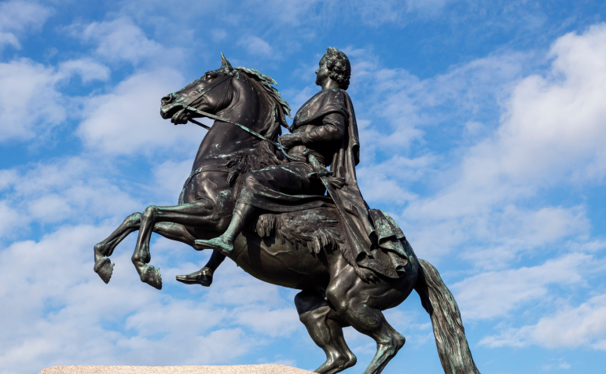
Город был основан в 1703 году Петром I на берегах реки Невы и стал символом силы
и могущества Российской империи.
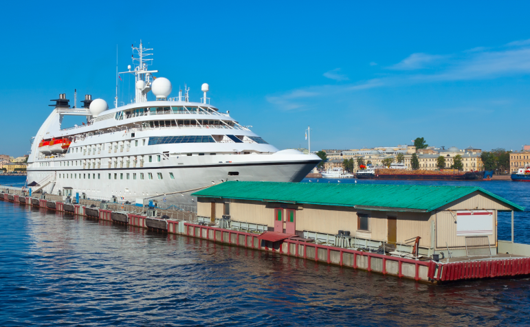
Сегодня Санкт-Петербург — это не только культурный центр, но и один
из крупнейших портов мира, который является важным экономическим центром России.
В этом путеводителе мы расскажем о самых интересных местах Санкт-Петербурга, которые
обязательно стоит посетить при поездке в этот прекрасный город.
История
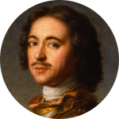
16 (27 по новому стилю) мая 1703 года
Основание Санкт-Петербурга Петром I
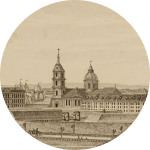
21 мая 1712 года
Санкт-Петербург становится официальной столицей России
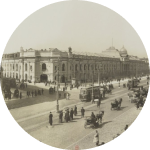
1914 год
Переименование в Петроград
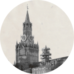
1918 год
Перенос столицы из Петрограда в Москву
26 января 1924 года
Переименование Петрограда в Ленинград в честь
В.И. Ленина
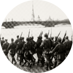
8 сентября 1941 — 27 января
1944 гг
Блокада Ленинграда, начатая войсками Финляндии
и Германии
8 мая 1965 года
Присвоение городу Ленинграду звания Города-героя.
Ленинград — город-герой
6 сентября 1991 года
Возвращение городу прежнего названия Санкт-Петербург,
о чём был подписан Указ Президиума Верховного Совета РСФСР
22 сентября 2012 года
Рождение 5-ти миллионного жителя Санкт-Петербурга
Достопримечательности
Санкт-Петербург — город, который известен своими красивыми зданиями, музеями и парками. Это
один из самых красивых городов России, который привлекает миллионы туристов каждый год. В этой
статье мы расскажем о самых знаменитых достопримечательностях Санкт-Петербурга.
Эрмитаж
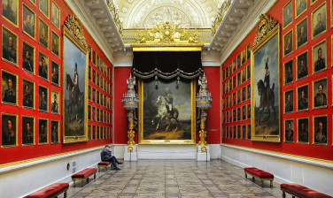
Эрмитаж — один из самых известных музеев мира, который находится в самом сердце
Санкт-Петербурга. Это огромный музей с более чем 3 миллионами экспонатов, включая произведения
искусства, античные скульптуры, древние монеты и многое другое. Здание музея само по себе
является достопримечательностью — это огромный дворец с белоснежными колоннами
и золотыми украшениями.
Дворцовая площадь
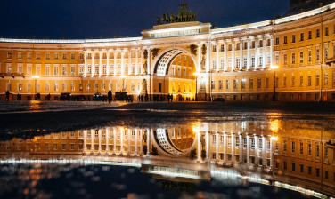
Дворцовая площадь — это центральная площадь Санкт-Петербурга, на которой находятся
некоторые из самых знаменитых достопримечательностей города, такие как Зимний дворец, Эрмитаж
и Александровский столб.
Площадь окружена красивыми зданиями и колоннами, а также является местом проведения различных
праздников и мероприятий.
Зимний дворец
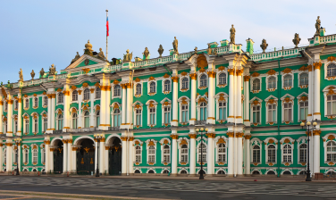
Зимний дворец — один из самых красивых и известных дворцов России. Он был
построен в XVIII веке для императорской семьи и находится на Дворцовой площади. Сегодня
в здании Зимнего дворца находится Эрмитаж.
Петергоф
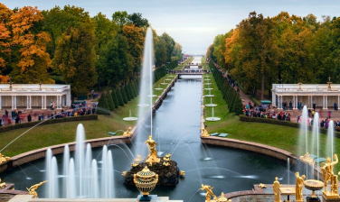
Петергоф — это знаменитый дворцово-парковый комплекс, расположенный на берегу Финского
залива. Он был основан Петром I в начале XVIII века и является одним из самых
красивых и известных достопримечательностей Санкт-Петербурга. В Петергофе находятся
многочисленные фонтаны, скульптуры и дворцы.
Исаакиевский собор
Исаакиевский собор — это один из самых красивых и величественных храмов
Санкт-Петербурга. Он был построен в XIX веке и является одним из символов города.
Собор украшен куполами, колоннами и мозаиками, а также является одной из самых высоких
церквей в мире.
Бюджет поездки
Перед поездкой необходимо рассчитать приблизительный бюджет, который понадобится вам для путешествия.